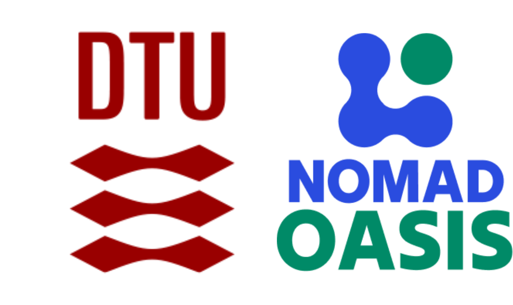

¶
{kind=link}
This plugin powers the data management infrastructure for the Materials Discovery group at the DTU Nanolab, led by Andrea Crovetto. The group specializes in high-throughput combinatorial synthesis and characterization of thin-film materials for sustainable energy applications.
Getting Started¶
📚 Tutorial¶
Learning-oriented guides
Follow our comprehensive step-by-step guide through a complete combinatorial materials discovery project: from sputtering deposition to data visualization.
📖 How-to Guides¶
Task-oriented instructions
Practical guides for using the NOMAD Oasis deployment:
Data Upload: - Upload Sputtering Data - Add EDX Measurements - Add Raman Measurements - Add XRD Measurements - Add Ellipsometry Measurements - Add RTP Data - Cleave Libraries
Visualization & Analysis: - Plot Combinatorial EDX Data - Export High-Quality Figures
💡 Explanation¶
Understanding-oriented context
Conceptual understanding of the plugin:
📋 Reference¶
Information-oriented documentation
Complete technical documentation:
- Schema organization
- Entity schemas (samples, substrates, targets, instruments, gases)
- Activity schemas (sputtering, RTP, cleaving, XRD, XPS, EDX, PL, ellipsometry, Raman, RT)
Research Focus¶
The Materials Discovery group develops novel semiconductor materials for:
- Photovoltaics: Next-generation solar cell materials including phosphosulfides, thiophosphates, and selenium-based absorbers
- Transparent Conductors: p-type and n-type transparent conducting materials for optoelectronic devices
- Sustainable Materials: Earth-abundant, non-toxic alternatives to conventional semiconductors
Combinatorial Approach¶
The group employs a combinatorial materials discovery workflow that accelerates materials exploration:
- Multi-target sputtering creates composition gradient libraries on single substrates
- Position-based sampling maps specific measurement points across composition space
- High-throughput characterization measures multiple sample positions in parallel
- Data-driven analysis identifies promising compositions for further development
This plugin enables FAIR (Findable, Accessible, Interoperable, Reusable) data management for the entire workflow, from synthesis to characterization, ensuring reproducibility and facilitating collaboration.